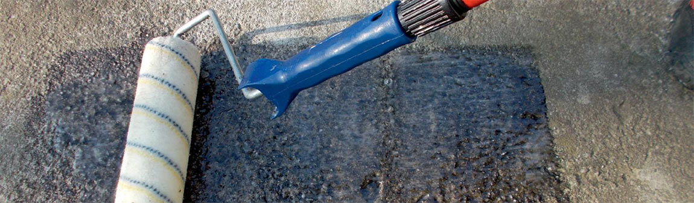
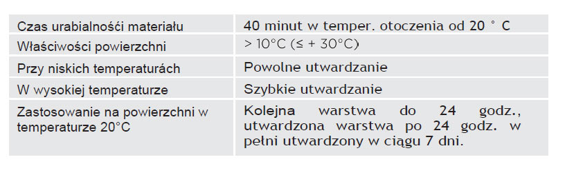
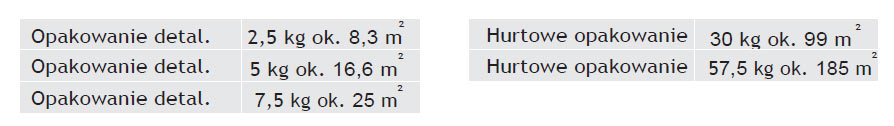

Top Fix jest jednym z podstawowych składników systemu TopStone do wzmacniania podłoża. Unikalny skład pozwala na zastosowanie również do świeżych betonów
- Gruntująca i wzmacniająca warstwa stosowana dla uzyskania doskonałej przyczepności podłoża.
- Dwuskładnikowy, bezbarwny, o niskiej lepkości, nie zawiera rozpuszczalników, epoksydowy, przyjazny dla środowiska
- Możliwość stosowania na świeży, niewysezonowany beton (nawet już 5 dni po betonowaniu).
- Możliwość aplikacji na zawilgocone podkłady betonowe bez izolacji spodniej.
- Możliwość stosowania na starych betonowych powierzchniach, kamieniach, drewnie, metalach, płytkach ceramicznych, dachówkach i
innych nieporowatych materiałach

W czasie aplikacji i utwardzania TopFix chronić od bezpośredniego kontaktu z wodą i środkami chemicznymi (Nie stosować w czasie deszczu!).Ponadto podłoże nie powiino zawierać substancji rozpuszczalnych w wodzie, takich jak sole, rozpuszczalniki, itp. Do podgrzewania przed aplikacją(w niskich temp otoczenia celem uzyskania niskiej gęstości) nie należy używać palników olejowych, palniki gazowe itp., które tworząc w miejscu aplikacji związki CO2 i pary wodne, które mają negatywny wpływ na jakość powierzchni.

Wartości zużycia mogą się różnić - w zależności od rodzaju i stanu podłoża oraz w zależności od konkretnego zastosowania.
W temperaturach> +12 ° C <+25 ° C, w suchym miejscu, w oryginalnym opakowaniu. Okres gwarancji- informacja na opakowaniu.
1. Przygotowanie podłoża – usuwanie zanieczyszczeń, przygotowanie powierzchni poprzez,szlifowanie,frezowanie, piaskowanie, a następnie odkurzanie powierzchni, odtłuszczanie, pozbawienie smarów i innych substancji chemicznych, które mogą działać jako separator.
2. Przygotowanie narzędzi: pojemnik do mieszania dwóch składników spoiwa, mieszarka wolnoobrotowa, wałek malarski (welur powierzchnia nylonowa z krótkim włosem), szczotki, ściągacz gumowy, paca stalowa gładka.
3. Dokładnie wymieszać oba składniki TopFix używając mieszadła (min przez 3 minuty). Tak przygotowany materiał zużyć w ciągu 40 minut w temperaturze 20°C, nanosić wałkiem, pędzlem,szczotką, packą gumową, lub mechanicznie - metodą natrysku itp.
4. Aby zwiększyć przyczepność kolejnej warstwy można świeżą nieutwardzoną powierzchnię TopFix przesypać suchym i czystym piaskiem kwarcowym o uziarnieniu 0,3 do 0,5 mm (zużycie około 0,5-4 kg / m), lub bezpośrednio przy aplikacji dodać piasek kwarcowy do materiału i aplikować na powierzchnię za pomocą kielni – proporcje mieszanki piasku i żywicy – TopFix 1:1.
5. TopFix stosować przy obniżającej temperaturze, aby uniknąć porów przy ulatnianiu powietrza z podłoża.
6. TopFix dokładnie zamyka strukturę powierzchni (czasem istnieje konieczność podwójnego gruntowania. Po zagruntowaniu powierzchni preparatem TopFix dopuszczalne jest od razu aplikowanie kolejnych warstw systemu kamienny dywan - metodą tzw."mokre na mokre".
TopFix po wymieszaniu od razu nanosimy na powierzchnię. W przeciwnym wypadku, przy następnym przemieszaniu (po około po 5-10 min.) powstaje ryzyko samoistnej gwałtownej reakcji egzotermicznej! Narzędzia i skórę należy oczyścić acetonem, utwardzoną masę usuwamy mechanicznie – papierem ściernym, szlifowaniem, itp.